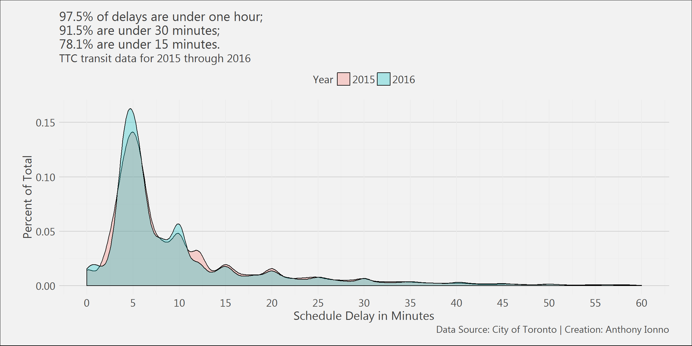
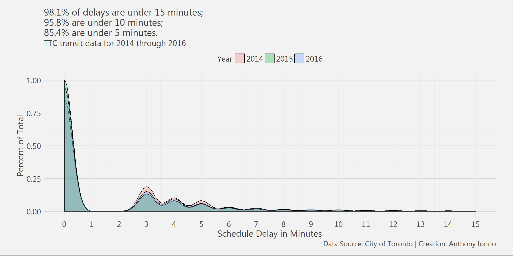

Revisiting Toronto Transit Commission Delay Data
Anthony Ionno
April 28, 2018
Summary
This post analyses Toronto Transit Commission (TTC) bus, streetcar, and subway delay data to better understand, based on pre-defined incident types, which incidents are occurring most frequently, when are they occurring throughout the day, and for how long typically, this is done through the presentation of a triplet of data visualisations for each transit type.
What this analysis identifies is the following:
Delays for buses and streetcars are typically due to mechanical issues; a much higher proportion of incidents and therefore delays typically occur around 5:00 am and 2:00 pm; over 93% of delays last about 30 minutes.
Subways have a larger variety of incident types to choose from but the most frequent incident types that lead to delays are due to issues around speed control and operator over-speeding. Neither the dataset nor the metadata provided identify what is meant by speed control as an incident type. Subway delays more frequently occur around 7:00 am and 4:00 pm. Subway delays are far shorter than either bus or streetcar delays; roughly 98% of subway delays are under 15 minutes.
Analysis
As mentioned previously this analysis investigates bus, streetcar, and subway delay data through the use of three data visualisations: a bar chart that displays the top incident types for a particular transit type, ranked by percent of total incident occurence; a histogram that displays the percentage of total incident count within a given hour; and a series of empricial probability density functions that display the likelihood that a delay is between a particular range of duration times.
Data
The raw data used to conduct this analysis can be located on the City of Toronto’s open data website and contains bus, streetcar, and subway delay information anywhere from 2014 through 2017.
For any of the three datasets, each row pertains to a particular delay and contains the following information:
- Report date
- Trip route
- Time of day
- Day of week
- General location
- Incident type (reason for delay)
- The minimum delay
- The minimum gap
- The direction the vehicle was travelling
- Vehicle number
More information on these datasets can be located at the following links: TTC Bus Delay Data, TTC Streetcar Delay Data, and TTC Subway Delay Data.
R libraries
The following R libraries were loaded for this analysis.
library(dplyr);library(magrittr);library(ggplot2);library(readxl);
library(readr);library(extrafont);library(stringr)Preprocessing
The code below highlights how the bus, streetcar, and subway delay datasets were read and transmuted within the R environment.
# File directory and list
file.directory<-"Data/"
file.list<-list.files("Data/")
for(i in 1:12){
if(i==1){
bus.2014<-read_xlsx(paste(file.directory,file.list[1],sep=""),sheet=i)
bus.2015<-read_xlsx(paste(file.directory,file.list[2],sep=""),sheet=i)
bus.2016<-read_xlsx(paste(file.directory,file.list[3],sep=""),sheet=i)
streetcar.2015<-read_xlsx(paste(file.directory,file.list[5],sep=""),sheet=i)
streetcar.2016<-read_xlsx(paste(file.directory,file.list[6],sep=""),sheet=i)
}
if(i!=1){
temp.1<-read_xlsx(paste(file.directory,file.list[1],sep=""),sheet=i)
bus.2014<-rbind(bus.2014,temp.1)
temp.2<-read_xlsx(paste(file.directory,file.list[2],sep=""),sheet=i)
bus.2015<-rbind(bus.2015,temp.2)
temp.3<-read_xlsx(paste(file.directory,file.list[3],sep=""),sheet=i)
bus.2016<-rbind(bus.2016,temp.3)
temp.4<-read_xlsx(paste(file.directory,file.list[5],sep=""),sheet=i)
streetcar.2015<-rbind(streetcar.2015,temp.4)
temp.5<-read_xlsx(paste(file.directory,file.list[6],sep=""),sheet=i)
streetcar.2016<-rbind(streetcar.2016,temp.5)
}
}
# Merging bus and streetcar data
bus.df<-rbind(bus.2014,bus.2015,bus.2016)
streetcar.df<-rbind(streetcar.2015,streetcar.2016)
# Reading in subway data and creating new variables
subway.df<-read_xlsx(paste(file.directory,file.list[9],sep=""),sheet=2)
subway.codes<-read_xlsx(paste(file.directory,file.list[8],sep=""),sheet=1) %>%
select(2:3)
names(subway.codes)[1]<-"Code"
names(subway.codes)[2]<-"Code_name"
subway.df<-left_join(subway.df,subway.codes)
subway.df<-subway.df[complete.cases(subway.df),]
subway.df<-subway.df %>%
mutate(Year=format(Date,"%Y"))
# Custom ggplot theme
theme_ai <- function(){
theme_minimal() +
theme(
text = element_text(family = "Segoe UI", color = "gray25"),
plot.title = element_text(size=16),
plot.subtitle = element_text(size = 14),
axis.text = element_text(size=13),
axis.title.x = element_text(size=15),
axis.title.y = element_text(size=15),
legend.title = element_text(size=15),
legend.text = element_text(size=15),
plot.caption = element_text(color = "gray30", size=12),
plot.background = element_rect(fill = "gray95"),
plot.margin = unit(c(5, 10, 5, 10), units = "mm"),
#axis.line = element_line(color="gray50")
axis.ticks.x = element_line(color="gray35"),
panel.grid.major.y = element_line(colour = "gray80"))
}Results
Bus Delays
########################
# Column plot of incident
# count
########################
bus.df %>%
group_by(Incident) %>%
tally() %>%
ggplot()+
geom_col(aes(x=reorder(Incident,n),y=I((n/sum(n)))*100),position="dodge",colour="black",fill="gray45")+
geom_text(aes(x=reorder(Incident,n),y=I((n/sum(n))*100),label=round((n/sum(n))*100,1),hjust=+1.2),colour="black")+
theme_ai()+
labs(title="Over half of reported bus incidents are due to\nmechanical failures",
subtitle="TTC transit data for 2014 through 2016",
x="",
y="Percent of Total",
caption="Data Source: City of Toronto | Creation: Anthony Ionno")+
scale_y_continuous(breaks=seq(0,100,10))+
coord_flip()
#######################
# Column plot of incidents
# broken down by Hour and Minute
#######################
bus.df %>%
mutate(Hour_minute=format(Time,"%H")) %>%
select(Hour_minute) %>%
group_by(Hour_minute) %>%
tally() %>%
ggplot()+
geom_col(aes(x=Hour_minute,y=I(n/sum(n)*100)),colour="black",fill="gray45")+
theme_ai()+
labs(title="Incidents are reported most frequently around\n5:00 am and 2:00 pm",
subtitle="TTC transit data for 2014 through 2016",
x="Hour",
y="Percent of Total",
caption="Data Source: City of Toronto | Creation: Anthony Ionno")+
scale_y_continuous(breaks=seq(0,100,5))# Density plot of delay times
bus.df %>%
mutate(Year=format(`Report Date`,"%Y")) %>%
filter(`Min Delay`<60) %>%
ggplot()+
geom_density(aes(x=`Min Delay`,fill=Year),alpha=.3,colour="black")+
theme_ai()+
theme(legend.position = "top",
legend.title = element_text(size=13),
legend.text = element_text(size=13))+
labs(title="98% of delays are under one hour;\n93% are under 30 minutes;\n71% are under 15 minutes.",
subtitle="TTC transit data for 2014 through 2016",
x="Schedule Delay in Minutes",
y="Percent of Total",
caption="Data Source: City of Toronto | Creation: Anthony Ionno")+
scale_y_continuous(breaks=seq(0,1,.05))+
scale_x_continuous(breaks=seq(0,100,5),limits=c(0,60))Streetcar Delays
streetcar.df %>%
group_by(Incident) %>%
tally() %>%
ggplot()+
geom_col(aes(x=reorder(Incident,n),y=I((n/sum(n)))*100),position="dodge",colour="black",fill="gray45")+
geom_text(aes(x=reorder(Incident,n),y=I((n/sum(n))*100),label=round((n/sum(n))*100,1),hjust=+1.2),colour="black")+
theme_ai()+
labs(title="Over half of reported streetcar incidents are due to\nmechanical failures",
subtitle="TTC transit data for 2015 through 2016",
x="",
y="Percent of Total",
caption="Data Source: City of Toronto | Creation: Anthony Ionno")+
scale_y_continuous(breaks=seq(0,100,10))+
coord_flip()streetcar.df %>%
mutate(Hour_minute=format(Time,"%H")) %>%
select(Hour_minute) %>%
group_by(Hour_minute) %>%
tally() %>%
ggplot()+
geom_col(aes(x=Hour_minute,y=I(n/sum(n)*100)),colour="black",fill="gray45")+
theme_ai()+
labs(title="Incidents are reported most frequently around\n5:00 am and 2:00 pm",
subtitle="TTC transit data for 2015 through 2016",
x="Hour",
y="Percent of Total",
caption="Data Source: City of Toronto | Creation: Anthony Ionno")+
scale_y_continuous(breaks=seq(0,100,5))streetcar.df %>%
mutate(Year=format(`Report Date`,"%Y")) %>%
filter(`Min Delay`<60) %>%
ggplot()+
geom_density(aes(x=`Min Delay`,fill=Year),alpha=.3,colour="black")+
theme_ai()+
theme(legend.position = "top",
legend.title = element_text(size=13),
legend.text = element_text(size=13))+
labs(title="97.5% of delays are under one hour;\n91.5% are under 30 minutes;\n78.1% are under 15 minutes.",
subtitle="TTC transit data for 2015 through 2016",
x="Schedule Delay in Minutes",
y="Percent of Total",
caption="Data Source: City of Toronto | Creation: Anthony Ionno")+
scale_y_continuous(breaks=seq(0,1,.05))+
scale_x_continuous(breaks=seq(0,100,5),limits=c(0,60))
Subway Delays
subway.df %>%
group_by(Code_name) %>%
filter(Year %in% c(2014:2016))%>%
tally() %>%
mutate(n=n/sum(n))%>%
top_n(20)%>%
arrange(desc(n))%>%
ggplot()+
geom_col(aes(x=reorder(Code_name,n),y=I(n*100)),position="dodge",colour="black",fill="gray45")+
#geom_text(aes(x=reorder(Code_name,n),y=I(n*100),label=round(n*100,1),hjust=-0.4),colour="black")+
theme_ai()+
labs(title="Top 20 subway delays: speed control and operator overspeeding\nare the most frequent reason for delay",
subtitle="TTC transit data for 2014 through 2016",
x="",
y="Percent of Total",
caption="Data Source: City of Toronto | Creation: Anthony Ionno")+
scale_y_continuous(breaks=seq(0,100,2))+
coord_flip()subway.df %>%
mutate(Hour_minute=str_split(subway.df$Time,":",simplify = TRUE)[,1]) %>%
select(Hour_minute) %>%
group_by(Hour_minute) %>%
tally() %>%
ggplot()+
geom_col(aes(x=Hour_minute,y=I(n/sum(n)*100)),colour="black",fill="gray45")+
theme_ai()+
labs(title="Incidents are reported most frequently around\n7:00 am and 4:00 pm",
subtitle="TTC transit data for 2014 through 2016",
x="Hour",
y="Percent of Total",
caption="Data Source: City of Toronto | Creation: Anthony Ionno")+
scale_y_continuous(breaks=seq(0,100,5))subway.df %>%
#mutate(Year=format(`Date`,"%Y")) %>%
filter(`Min Delay`<60 & Year %in% c(2014:2016)) %>%
ggplot()+
geom_density(aes(x=`Min Delay`,fill=Year),alpha=.3,colour="black")+
theme_ai()+
theme(legend.position = "top",
legend.title = element_text(size=13),
legend.text = element_text(size=13))+
labs(title="98.1% of delays are under 15 minutes;\n95.8% are under 10 minutes;\n85.4% are under 5 minutes.",
subtitle="TTC transit data for 2014 through 2016",
x="Schedule Delay in Minutes",
y="Percent of Total",
caption="Data Source: City of Toronto | Creation: Anthony Ionno")+
scale_y_continuous(breaks=seq(0,1,.25))+
scale_x_continuous(breaks=seq(0,100,1),limits=c(0,15))
System Information
## R version 3.4.1 (2017-06-30)
## Platform: x86_64-w64-mingw32/x64 (64-bit)
## Running under: Windows 7 x64 (build 7601) Service Pack 1
##
## Matrix products: default
##
## locale:
## [1] LC_COLLATE=English_United States.1252
## [2] LC_CTYPE=English_United States.1252
## [3] LC_MONETARY=English_United States.1252
## [4] LC_NUMERIC=C
## [5] LC_TIME=English_United States.1252
##
## attached base packages:
## [1] stats graphics grDevices utils datasets methods base
##
## other attached packages:
## [1] RevoUtilsMath_10.0.0 RevoUtils_10.0.5 RevoMods_11.0.0
## [4] MicrosoftML_1.5.0 mrsdeploy_1.1.2 RevoScaleR_9.2.1
## [7] lattice_0.20-35 rpart_4.1-11
##
## loaded via a namespace (and not attached):
## [1] Rcpp_0.12.12 codetools_0.2-15 CompatibilityAPI_1.1.0
## [4] rprojroot_1.2 digest_0.6.12 foreach_1.4.4
## [7] grid_3.4.1 R6_2.2.0 backports_1.1.0
## [10] jsonlite_1.4 magrittr_1.5 evaluate_0.10.1
## [13] stringi_1.1.5 curl_2.6 rmarkdown_1.6
## [16] iterators_1.0.8 tools_3.4.1 stringr_1.2.0
## [19] yaml_2.1.14 compiler_3.4.1 htmltools_0.3.6
## [22] knitr_1.17